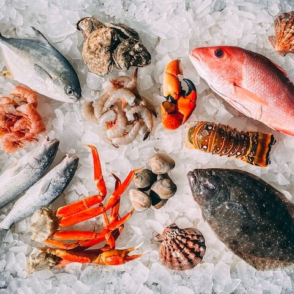

Bringing the ocean's freshest flavors to your plate. Dive in

Welcome to Alfonso's Shell Shack, where we bring the freshest seafood to your plate in a casual, welcoming atmosphere. Our restaurant is the perfect spot to gather with friends and family for a delicious meal, or to grab a quick bite on the go.
At Alfonso's Shell Shack, we believe that great food should be accessible to everyone. That's why we offer affordable prices and a warm, friendly atmosphere that makes you feel right at home. Our staff is dedicated to providing top-notch service and making your dining experience a memorable one.
Words From Our Patrons
Alfonso's Shell Shack is hands-down the best seafood restaurant in town. The shrimp are always plump and juicy, the crab legs are deliciously seasoned, and the hushpuppies are the perfect side. I've never had a bad meal here and I always leave feeling satisfied and happy.
-Sophia Alcarez
I'm a regular at Alfonso's Shell Shack and it never disappoints. The atmosphere is laid-back and welcoming, the service is always friendly and attentive, and the seafood is some of the best I've ever had. I especially love the fried oysters - they're crispy and flavorful without being greasy.
-Emily Smith
If you're looking for great seafood in a casual atmosphere, look no further than Alfonso's Shell Shack. The prices are reasonable, the portions are generous, and the quality is always top-notch. It's become a go-to spot for me and my family.
(123) 456-7890
58342 Main Street
Coastal Town, Maine
United States, 67923
Hours:
Mon-Thu:
11AM-9PM
Fri-Sat:
11AM-10PM
Sunday:
11AM-9PM
Frequently Asked Questions
Do you offer any vegetarian or vegan options?
Of course! Alfonso is very considerate of his vegan and vegetarian friends. We do offer some vegetarian and vegan options on our menu.
Are there any gluten-free options available?
Yes, we offer gluten-free options such as our grilled fish, shrimp, and vegetable dishes. Please inform your server of any dietary restrictions or allergies when ordering.
Is outdoor seating available?
Yes, we offer outdoor seating.
Is there a kids' menu available?
Yes, we offer a kids' menu with a variety of kid-friendly options. Kids under the age of 5 eat for free.
Do children eat for free?
At Alfonso's, children under the age of 5 eat for free.